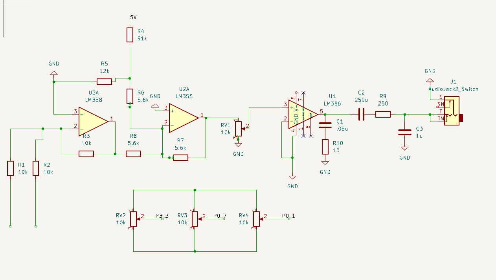
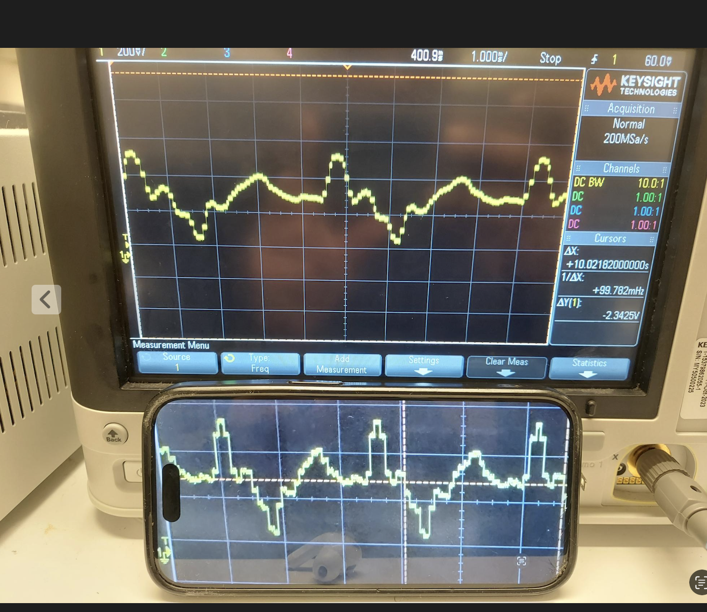

jazzy Dude
A PSOC Based Digital Saxophonoe/Piano/Jazz Synthesizer,
https://youtu.be/IEKbe4mpJPY

Jazzy Dude was my final project for MIT’s Microcomputer Class (6.115/6.2060). In this class we did embedded-systems labs from scratch with a 8051 microcontroller, a lot of assembly, and circuits that forced us to understand everysingle bit of the circuit/code/cassembly. For my final project I decided to build a instrument synthesizer on the Cypress PSoC 5LP. The end goal was that it could either be played live, producing a saxophone-like timbre (with a low-sample-rate piano as a backup voice), or could auto-play jazz standards that you could transpose into any key and adjust to any tempo.
The first battle was just getting audio out of the thing. I had to design and wire the whole audio circuit: shifting and buffering the signal with opamps(LM358), feeding it into an audio amplifier(a LM386 to be specific), and then routing that out through a 3.5 mm jack.
Once the audio circuit was working, I moved on to the actual synthesis stage. I started by ripping a clean two-second sax note online, then started scripting some nice python code that used numpy to abstract away fft’s for me. I isolated one period of the waveform so it could loop seamlessly. I normalized it to ±1 and quantized it to 8-bit values (0–255) for the PSoC’s tables.I ran a Fourier transform, kept only the lowest few harmonics, and then did an inverse FFT to rebuild a wavetable. I also swept the number of harmonics (1, 2, 5, 10, 20, 30, 40) so I had a variety to pick from(and so I had graphs for my lab notebook). But just iterating through the samples in hardware, souned mid and robotty , which meant I had to do what every synthesizer blog raves about ADSR(Attack Decay Sustainn and Release baby). The one issue is at the time I was using the PSOC’s built in wavedac where you could just drop in a csv, and it loops over values and spits out analog values. Which meant there was no good middle man for amplitude modulation.
That’s where Direct Digital Synthesis (DDS) came in. The DDS was honestly pretty simple, just a phase accumulator stepping through the wavetable, and it gave me the hook I needed to multiply the amplitude by a time-varying envelope. I built the ADSR as a small state machine in C with case statements stepping through attack, decay, sustain, and release, with a dt variable keeping track of elapsed time. Getting the timing right was more annoying than I expected; if the decay was slightly too long, short notes (like 16th notes) sounded muddy. I spent several days just tuning those parameters so that fast runs sounded crisp, and missing bit widths and sampling rates till it sounded the way I wanted.

Once we got any note we wanted coming out, I added a few extra credit features. I wrote helper routines in C that could schedule notes, bars, and even whole charts, so the synthesizer could “perform” pieces on its own. The songs were stored as 2D arrays of note structs (pitch, duration, velocity), which made it easy to transpose them to any key or speed. I also wired in potentiometers so you could set the BPM and shift the key on the fly, which made demos a lot more fun—you could slow down or speed up a tune in real time without reflashing the board. And you could switch between 8 tunes just by turning a potentiometer. Then yippee i finished my final project and could finally sleep.

Me with my project, I really enjoy this photo, I'm mildly proud there was a lot more ambitous things I wanted to do, but those were me being a crazy person. This project kind of has a special place in my heart, cause it was my first solo end to end project. I wrote the whole thing myself, I went to offie hours and got help from course staff and friends but since projects are so specific people can only help so much. It felt really satisfying end to ending a system from circuits to a bunch of C code, and messing with timing constraints in PSOC's clock manager